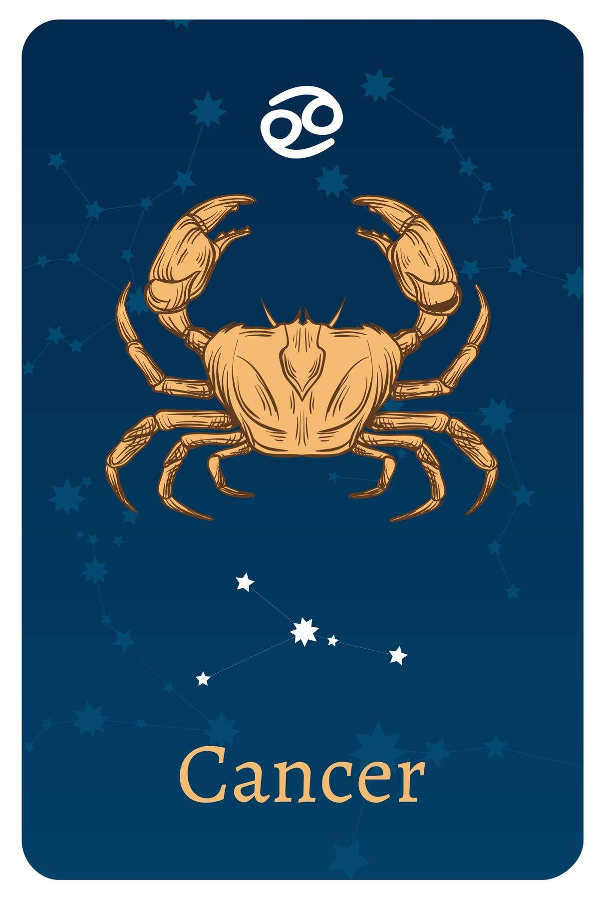

- Date Range : June 21 – JULY 22
- Element : Water
- Color : Silver
- Quality : Cardinal
- Day : Monday ,Thursday
- Ruling planet : Moon
- Ruling house : Fourth
- Lucky number : 2, 3, 15, 20
- Lucky gem : Moonstone
- Top love Matches : Taurus , Pisces
CANCER (June 21 – JULY 22)
Cancer Personality Traits
Strengths : Tenacious, highly imaginative, loyal, emotional, sympathetic, persuasive
Weaknesses : Art, home-based hobbies, relaxing near or in water, helping loved ones, a good meal with friends
Cancer likes : Music, books, magazines, chats with nearly anyone, short trips around the town
Cancer dislike : Strangers, any criticism of Mom, revealing of personal life
Cancer is a zodiac sign that is deeply intuitive and sentimental, making them one of the most challenging signs to get to know.
They are highly emotional and sensitive, and prioritize matters related to family and home. Those born with their Sun in Cancer are very loyal and empathetic to the pain and suffering of others. As a Water sign, just like Scorpio and Pisces, Cancer is guided by their emotions and heart, and can have difficulty fitting into the world around them. Ruled by the Moon, their internal mysteries are deepened by the phases of the lunar cycle, creating fleeting emotional patterns that are often beyond their control. As children, they may lack coping and defensive mechanisms for the outer world, and require care and understanding to navigate it successfully.
Cancer's Love Style
Cancers sometimes get frustrated that their partner doesn't know everything that's going on in their internal life, and they can easily put up walls and say it's all good when everything is clearly the exact opposite.
In order to truly connect, Cancers must be patient with their
partner and voice their emotional needs—and these lessons can have a
steep learning curve for this sign. Crabs want a partner who can
bear witness to their emotional ups and downs, yet they can lash out
if their partner tries to "fix" things. Sometimes, all Cancer needs
to do is vent. In bed, Cancer is happiest with long, passionate
lovemaking. While props, toys, and shower sex can all be fun,
Cancer's absolute favorite is any position that allows plenty of eye
contact with his or her lover. Crabs want to cuddle after sex (if
they feel trusted and in love), and they're always up for a lazy day
spent entirely under the covers.
This sign plays for keeps, and believes in in his or her partner.
Sometimes, Crabs may struggle with letting a relationship end, and
their breakups may have to happen several times before they accept
that it's really over. On the flip side, Cancer takes loyalty very
seriously, and a breach of loyalty, however small it seems, can be a
deal-breaker for a Cancer.
Cancer' Friendship Style
Cancers may turn down the first invite you give them. They may even
turn down the fifth. But once they finally say yes, know that you may
have found a real friend. While Cancers, like their spirit animal the
Crab, are known for their thick outer shell, trust that the
standoffishness is all an act. Get a bit below the surface, and you'll
find that a Cancer is all feelings.
Cancers love deep conversations, but they also have pretty firm
boundaries around "their" time. Don't be offended if they turn down an
invite—chances are, they truly need the downtime. And Crabs can be
possessive—especially of the friends they love. If they don't like
your other friends, they may turn prickly. But hear them out. Cancers
have an excellent sense of people's true colors, and there may be a
good reason they want you to stay away from someone.
Three reasons why Cancer make great friends
- Intelligent Cancer will tell you exactly what's going on in any situation, providing spot-on analysis of everything in your life, from personal relationships to political developments.
- Creative Cancer always has a unique perspective on the world. This sign is your go-to for book and playlist recommendations, and loves talking through what a work of art actually means, rather than just stopping at "Did you like it?"
- Cancer always has your back. Even if you don't feel like you have a grip or you're being hard on yourself for something, Cancer will tell you all the ways that you bring joy and love into the world.
Cancer are amazing! Their name says it all:
C for caring
A for ambitious
N for nourishing
C for creative
E for emotionally intelligent
R for resilient
Cancer's career, money & success traits
Cancer's greatest career strength: Intuition. Affiliated with Artemis, goddess of the hunt, Cancer knows which way the wind will blow, work-wise, before there's a memo or email. Cancer is adept at reading people, and, as the Zodiac sign most closely associated with mothers and wombs, the Crab is intuitively respected as the manager who will fix things, guide colleagues, and nurture their careers.
Cancer's greatest career challenge: Taking emotion out of the equation. In some ways, Cancers' emotional connection to their work is an asset. When they feel passion, they will pull countless all-nighters to finish a project. But there's a flip side:
When Cancers don't care about something or disagree with their higher-ups about how a project should be handled, they may lash out passive-aggressively by delivering sloppy work.
Learning how to divest their emotions from assignments (particularly
the less-than-inspiring ones) can help Cancer get ahead Cancer
individuals are dependable and hardworking, willing to roll up their
sleeves to ensure the job will get done. They usually perform better
when left to work independently, demonstrating loyalty to their
employer and a strong focus on the task at hand. Their well-suited
careers include nursing, housekeeping, gardening, politics, and
interior decorating.
Job security and financial stability are of great importance to
Cancer representatives, and serve as the primary motivation for
their diligent work. They tend to accumulate wealth and are cautious
about spending it all at once. Their goal is to save, invest, and
observe their investments grow over time. They are resourceful and
skilled in managing time and finances, often overseeing all
household finances and controlling their partner or other family
members' spending.

Motto
"I feel, therefore I am."
Famous Cancer

Ariana Grande
(Singer)
June 26, 1993
Cancer
June 26, 1993
Cancer

Post Malone
(Singer)
July 4, 1995
Cancer
July 4, 1995
Cancer

Selena Gomez
(Singer)
July 22, 1992
Cancer
July 22, 1992
Cancer
Join Our Daily Overview
Your Astrological overview guides you on what to look out for and how to act in tune with the stars and planets each day.
Was this page helpful?
Do not selling My personal info!
© Copyright-2023 -All right reserved.